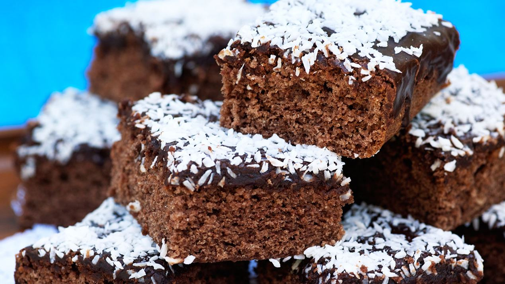
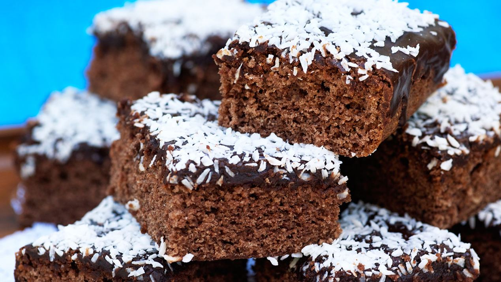

Kärleksmums är en riktig klassiker med underbart god glasyr som smakar kaffe och choklad. Och om det inte är kokos på toppen är det inte Kärleksmums! Denna älskade fikafavorit går även under namnet snoddas och mockarutor.
Kärleksmums är en riktig klassiker med underbart god glasyr som smakar kaffe och choklad. Och om det inte är kokos på toppen är det inte Kärleksmums! Denna älskade fikafavorit går även under namnet snoddas och mockarutor.
| Smör | 200 g | |
| Mjölk | 2 dl | |
| Ägg | 4 st |